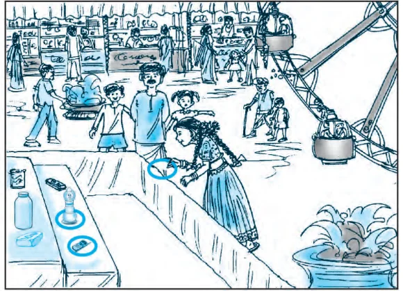

You must have come across situations like the one given below :
Akhila went to a fair in her village. She wanted to enjoy rides on the Giant Wheel and play Hoopla (a game in which you throw a ring on the items kept in a stall, and if the ring covers any object completely, you get it). The number of times she played Hoopla is half the number of rides she had on the Giant Wheel. If each ride costs ₹ 3, and a game of Hoopla costs ₹ 4, how would you find out the number of rides she had and how many times she played Hoopla, provided she spent ₹ 20.
May be you will try it by considering different cases. If she has one ride, is it possible? Is it possible to have two rides? And so on. Or you may use the knowledge of Class IX, to represent such situations as linear equations in two variables.

Let us try this approach.
Denote the number of rides that Akhila had by \(x\), and the number of times she played Hoopla by \(y\). Now the situation can be represented by the two equations:
\(y = \dfrac{1}{2}x \qquad\qquad (1)\)
\(3x + 4y = 20 \qquad\qquad (2)\)
Can we find the solutions of this pair of equations? There are several ways of finding these, which we will study in this chapter.